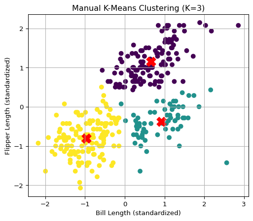
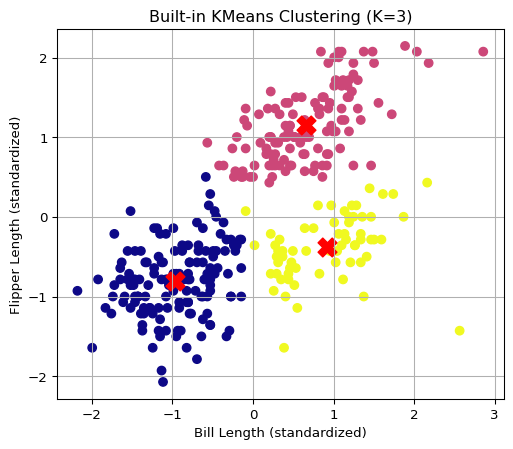
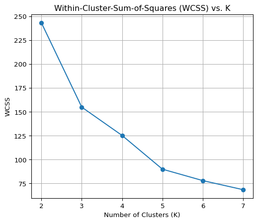
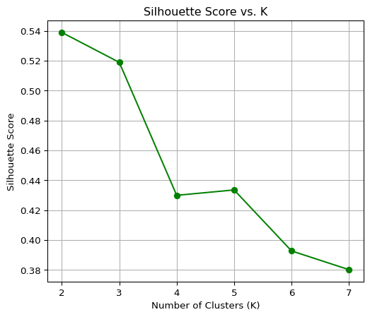
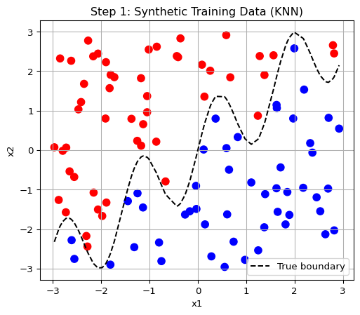
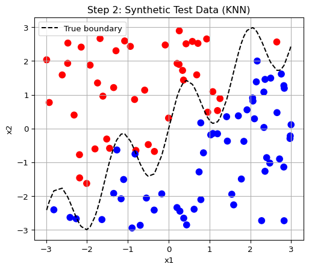
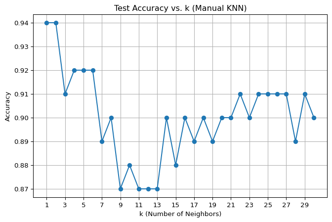

import pandas as pd
# Load dataset
df = pd.read_csv("palmer_penguins.csv")
# Keep only relevant features and remove missing values
penguins = df[["bill_length_mm", "flipper_length_mm"]].dropna().reset_index(drop=True)Machine Learning
1a. K-Means Clustering on the Palmer Penguins Dataset
Objective
In this analysis, I implemented the K-Means clustering algorithm from scratch and applied it to the Palmer Penguins dataset. The goal was to identify natural groupings among penguins based on two features: bill_length_mm and flipper_length_mm. I also compared the results to the built-in KMeans implementation in scikit-learn and evaluated clustering performance using Within-Cluster-Sum-of-Squares (WCSS) and Silhouette Scores.
Step 1: Load and Prepare Data
Step 2: Standardize the Data
Standardizing ensures that both features contribute equally to the distance calculation in K-Means.
from sklearn.preprocessing import StandardScaler
scaler = StandardScaler()
data_scaled = scaler.fit_transform(penguins)Step 3: Implement K-Means from Scratch
import numpy as np
import random
def euclidean_distance(a, b):
return np.linalg.norm(a - b)
def initialize_centroids(data, k):
indices = random.sample(range(data.shape[0]), k)
return data[indices]
def assign_clusters(data, centroids):
return np.array([np.argmin([euclidean_distance(point, centroid) for centroid in centroids]) for point in data])
def update_centroids(data, labels, k):
return np.array([data[labels == i].mean(axis=0) for i in range(k)])
def run_kmeans_manual(data, k, max_iter=100):
centroids = initialize_centroids(data, k)
for _ in range(max_iter):
labels = assign_clusters(data, centroids)
new_centroids = update_centroids(data, labels, k)
if np.allclose(centroids, new_centroids):
break
centroids = new_centroids
return labels, centroidsStep 4: Visualize Clustering Results
Manual K-Means Output for K=3:
import matplotlib.pyplot as plt
labels_manual, centroids_manual = run_kmeans_manual(data_scaled, 3)
plt.figure(figsize=(6, 5))
plt.scatter(data_scaled[:, 0], data_scaled[:, 1], c=labels_manual, cmap='viridis', s=40)
plt.scatter(centroids_manual[:, 0], centroids_manual[:, 1], c='red', marker='X', s=200)
plt.title("Manual K-Means Clustering (K=3)")
plt.xlabel("Bill Length (standardized)")
plt.ylabel("Flipper Length (standardized)")
plt.grid(True)
plt.show()
Step 5: Compare with Built-In KMeans
from sklearn.cluster import KMeans
kmeans_builtin = KMeans(n_clusters=3, random_state=42)
labels_builtin = kmeans_builtin.fit_predict(data_scaled)
centroids_builtin = kmeans_builtin.cluster_centers_
plt.figure(figsize=(6, 5))
plt.scatter(data_scaled[:, 0], data_scaled[:, 1], c=labels_builtin, cmap='plasma', s=40)
plt.scatter(centroids_builtin[:, 0], centroids_builtin[:, 1], c='red', marker='X', s=200)
plt.title("Built-in KMeans Clustering (K=3)")
plt.xlabel("Bill Length (standardized)")
plt.ylabel("Flipper Length (standardized)")
plt.grid(True)
plt.show()
Step 6: Evaluate Cluster Quality
We evaluate the clustering results using:
#### 1. Within-Cluster-Sum-of-Squares (WCSS): Measures compactness of clusters.
2. Silhouette Score: Measures separation between clusters.from sklearn.metrics import silhouette_score
wcss = []
sil_scores = []
K_range = range(2, 8)
for k in K_range:
kmeans = KMeans(n_clusters=k, random_state=42)
labels = kmeans.fit_predict(data_scaled)
wcss.append(kmeans.inertia_)
sil_scores.append(silhouette_score(data_scaled, labels))
# Plot WCSS
plt.figure(figsize=(6, 5))
plt.plot(K_range, wcss, marker='o')
plt.title("Within-Cluster-Sum-of-Squares (WCSS) vs. K")
plt.xlabel("Number of Clusters (K)")
plt.ylabel("WCSS")
plt.grid(True)
plt.show()
# Plot Silhouette Score
plt.figure(figsize=(6, 5))
plt.plot(K_range, sil_scores, marker='o', color='green')
plt.title("Silhouette Score vs. K")
plt.xlabel("Number of Clusters (K)")
plt.ylabel("Silhouette Score")
plt.grid(True)
plt.show()

Interpretation of Results
| Metric | Suggested K |
|---|---|
| WCSS (Elbow) | K = 7 |
| Silhouette Score | K = 2 |
- The WCSS plot shows diminishing returns beyond K=3–4, suggesting an “elbow” around that range.
- The Silhouette Score peaks at K=2, indicating clean separation between two groups.
- K = 3 balances both interpretability and performance, and matches known biological subgroups (species) in the penguins dataset.
Conclusion
I successfully implemented K-Means from scratch and confirmed that the results aligned well with sklearn’s built-in version. Based on WCSS and silhouette score, the optimal number of clusters is likely between 2 and 3. The clustering provides meaningful insights into the natural grouping of penguins based on flipper and bill measurements.
2a. K-Nearest Neighbors (KNN) – Synthetic Boundary Classification
Objective
This analysis explores the behavior of the K-Nearest Neighbors (KNN) algorithm using a synthetic dataset. A binary outcome variable y is determined by whether a point lies above or below a non-linear “wiggly” boundary defined by a sine function.
Step 1: Generate Training Data
import numpy as np
import pandas as pd
import matplotlib.pyplot as plt
# Set seed for reproducibility
np.random.seed(42)
# Generate 100 training samples
n_train = 100
x1_train = np.random.uniform(-3, 3, n_train)
x2_train = np.random.uniform(-3, 3, n_train)
# Define the wiggly boundary and assign labels
boundary_train = np.sin(4 * x1_train) + x1_train
y_train = (x2_train > boundary_train).astype(int)
# Create training DataFrame
train_df = pd.DataFrame({
"x1": x1_train,
"x2": x2_train,
"y": y_train
})
# Plot the training data
plt.figure(figsize=(6, 5))
plt.scatter(train_df["x1"], train_df["x2"], c=train_df["y"], cmap="bwr", s=60)
plt.plot(np.sort(x1_train), np.sin(4 * np.sort(x1_train)) + np.sort(x1_train), 'k--', label='True boundary')
plt.title("Step 1: Synthetic Training Data (KNN)")
plt.xlabel("x1")
plt.ylabel("x2")
plt.legend()
plt.grid(True)
plt.show()
Step 2: Generate Test Data
# Set a different seed for test data
np.random.seed(24)
# Generate 100 test samples
n_test = 100
x1_test = np.random.uniform(-3, 3, n_test)
x2_test = np.random.uniform(-3, 3, n_test)
# Use the same wiggly boundary function to assign labels
boundary_test = np.sin(4 * x1_test) + x1_test
y_test = (x2_test > boundary_test).astype(int)
# Create test DataFrame
test_df = pd.DataFrame({
"x1": x1_test,
"x2": x2_test,
"y": y_test
})
# Plot the test data
plt.figure(figsize=(6, 5))
plt.scatter(test_df["x1"], test_df["x2"], c=test_df["y"], cmap="bwr", s=60)
plt.plot(np.sort(x1_test), np.sin(4 * np.sort(x1_test)) + np.sort(x1_test), 'k--', label='True boundary')
plt.title("Step 2: Synthetic Test Data (KNN)")
plt.xlabel("x1")
plt.ylabel("x2")
plt.legend()
plt.grid(True)
plt.show()
Step 3: Manual Implementation of KNN
from collections import Counter
import numpy as np
# Define the manual KNN function
def knn_predict(train_X, train_y, test_X, k):
predictions = []
for test_point in test_X:
# Step 1: Compute Euclidean distances to all training points
distances = np.linalg.norm(train_X - test_point, axis=1)
# Step 2: Find the indices of the k nearest neighbors
k_indices = distances.argsort()[:k]
# Step 3: Get the labels of the k nearest neighbors
k_labels = train_y[k_indices]
# Step 4: Use majority vote to determine the predicted label
most_common = Counter(k_labels).most_common(1)[0][0]
predictions.append(most_common)
return np.array(predictions)
# Prepare input arrays for training and test
X_train = train_df[["x1", "x2"]].values
y_train = train_df["y"].values
X_test = test_df[["x1", "x2"]].values
y_test = test_df["y"].values
# Example: run KNN with k = 3
y_pred_k3 = knn_predict(X_train, y_train, X_test, k=3)
# Print first 10 predictions vs actual
for i in range(10):
print(f"Test Point {i+1}: Predicted = {y_pred_k3[i]}, Actual = {y_test[i]}")Test Point 1: Predicted = 0, Actual = 0
Test Point 2: Predicted = 0, Actual = 0
Test Point 3: Predicted = 0, Actual = 0
Test Point 4: Predicted = 1, Actual = 1
Test Point 5: Predicted = 1, Actual = 1
Test Point 6: Predicted = 0, Actual = 0
Test Point 7: Predicted = 0, Actual = 0
Test Point 8: Predicted = 0, Actual = 0
Test Point 9: Predicted = 1, Actual = 1
Test Point 10: Predicted = 0, Actual = 0Step 4: Evaluate Test Accuracy for k = 1 to 30
To assess the performance of the KNN algorithm, I ran it for values of k ranging from 1 to 30, and recorded the accuracy for each.
# Step 4: Evaluate accuracy for k from 1 to 30
accuracy_results = []
for k in range(1, 31):
y_pred = knn_predict(X_train, y_train, X_test, k)
accuracy = np.mean(y_pred == y_test)
accuracy_results.append(accuracy)
# Plot accuracy vs. k
plt.figure(figsize=(8, 5))
plt.plot(range(1, 31), accuracy_results, marker='o')
plt.title("Test Accuracy vs. k (Manual KNN)")
plt.xlabel("k (Number of Neighbors)")
plt.ylabel("Accuracy")
plt.grid(True)
plt.xticks(range(1, 31, 2))
plt.show()
# Identify the best k
optimal_k = np.argmax(accuracy_results) + 1 # +1 because Python indexing starts at 0
optimal_accuracy = accuracy_results[optimal_k - 1]
print(f"Optimal k: {optimal_k}, Accuracy: {optimal_accuracy:.2f}")
Optimal k: 1, Accuracy: 0.94Results
The highest test accuracy was achieved at k = 1, with an accuracy of 94%.
The accuracy generally declined or oscillated as k increased, reflecting the non-linear nature of the boundary and the sensitivity of KNN to local neighborhoods.
Interpretation
- Low values of
k(like 1–3) perform best when the decision boundary is complex or non-linear, as in this sine-function boundary. - Larger
kvalues tend to over-smooth the decision regions and perform worse in this case. - k = 1 slightly overfits, but is still optimal here due to the synthetic boundary’s complexity and lack of noise in the dataset.